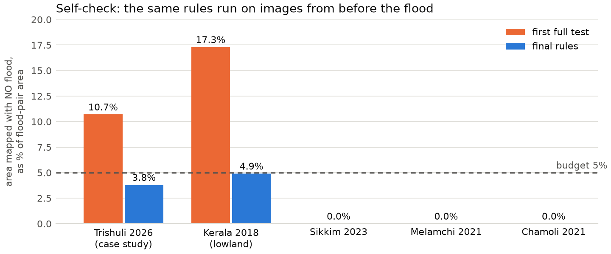
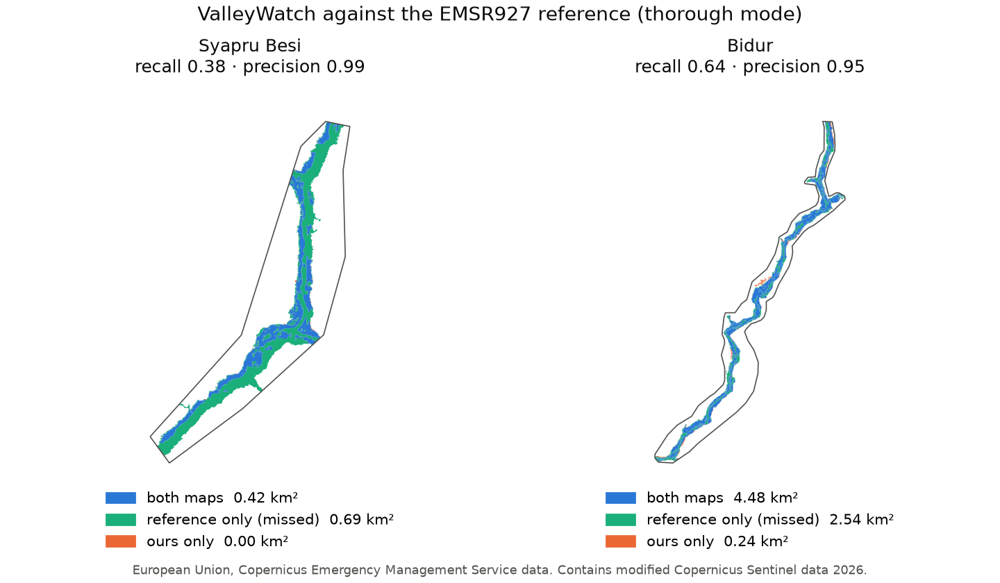
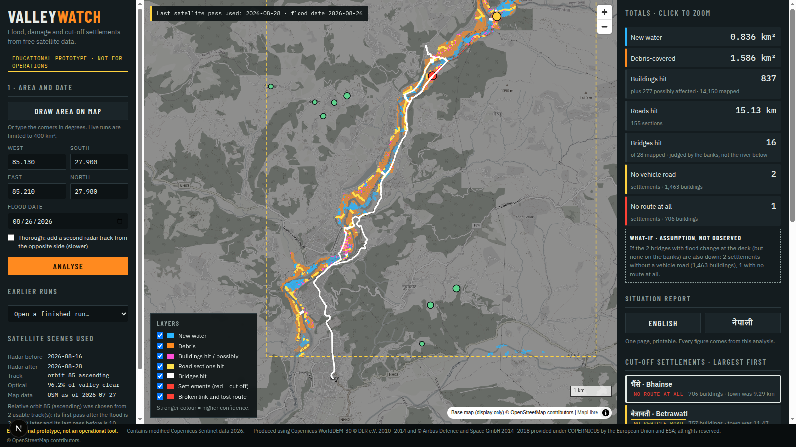

Multimodal AI Hackathon 2026, Track B. Team: [names to be added]. Draft of 11 October 2026. Target length: six pages.
ValleyWatch is an educational prototype, not an operational tool.
Give ValleyWatch a bounding box and a flood date. From raw satellite data it answers three questions for rescue teams:
A map dashboard shows the result, a one-page situation report is produced in English and Nepali, and a copilot answers questions from the computed data. Nothing is specific to one valley: area and date are the only inputs.
| Input | Use |
|---|---|
| Sentinel-1 GRD (VV, VH) | change detection, same relative orbit before and after |
| Sentinel-2 L2A | vegetation loss and water, cloud-masked per pixel |
| Copernicus DEM 30 m | terrain correction, radar blind zones, river corridor, flow path |
| OpenStreetMap via ohsome, dated before the event | buildings, roads, bridges, places, health facilities |
No other dataset is an input: no surface-water layer, population grid or other elevation model. Permanent water comes from the pre-event radar image and settlement size from building counts. Copernicus EMS maps (EMSR927) are read only by a separate validation module that the pipeline never imports.
Scene picker. The Copernicus catalogue is searched around the date. The pair is chosen on one relative orbit and pass direction, soonest after the flood first. The pass before that is kept as a no-flood baseline. For the Trishuli case this gives orbit 85 ascending, 16 and 28 August 2026.
Radar change. openEO returns backscatter orthorectified with the Copernicus DEM. After a Lee speckle filter, change is the difference in dB. The threshold adapts to each area: three times the noise level measured on the pre-event pair, limited to 3 to 6 dB. Both bands dropping means new water; VV rising means debris. Pixels dark before the event are permanent water and are removed. Hysteresis follows thin channels.
Terrain. Slopes above 30 degrees, layover and shadow are excluded using the DEM and the look direction. A river corridor is derived from the DEM by flow routing: the core is ground within 20 m of height above the river, and a detection may grow from the core up to 120 m while it stays connected.
Optical check. Sentinel-2 composites before and after are masked per pixel with the scene classification band, so a mostly cloudy scene still contributes its clear gaps. Vegetation loss (green before, bare and bright after) adds debris that radar missed in gorges. Optical water only confirms radar water.
Flood-path filter. A flood runs downstream without gaps. Detections are kept only where the ground drains into a river reach downstream of confident change. Isolated patches in side valleys are dropped.
Confidence by agreement. High: radar and optical agree. Medium: optical only, or radar water with no clear optical view. Low: radar-only debris, radar disputed by optical, water seen only by the second track.
Damage. Buildings overlapping a polygon are "hit"; within 15 m, "possibly affected". A bridge is judged only by the bank at each end of its deck (a 25 m stretch, at least half covered), never by change in the river under the span.
Cut-off analysis. A road graph from pre-event OpenStreetMap, covering the box and 15 km around it. Hit sections and hit bridges are removed. Each settlement is tested at two levels, vehicle roads only and any route including footpaths, to the nearest town and the nearest hospital.
Thorough mode adds a second radar track looking from the opposite side.
We had no ground truth while building, so we built a test that needs none. The identical rules are run on two images from BEFORE the flood. Whatever they map there is false alarm. A rule may be loosened only while this no-flood area stays within 5% of the flood-pair area. No setting was chosen from a reference-map score.
This test changed the design several times:
| What the test showed | What we did |
|---|---|
| Radar debris: 4.98 km2 without a flood against 5.34 km2 with one | corridor, flood-path filter, larger minimum patch |
| Optical "new water": 0.37 km2 without a flood against 0.43 km2 with one (monsoon rivers widen every year) | optical water may only confirm radar water |
| Lowland (Kerala): more "debris" without a flood than with one | debris class switched off on plains |
Final Trishuli result (35 x 52 km box, thorough mode): 3.30 km2 water and 4.78 km2 debris, with 0.33 km2 mapped on the no-flood pair (3.8%).

Figure 1. Area mapped when there is no flood, as a share of the flood-pair area, before and after the fixes this test led to.
Compared with EMSR927 (European Union, Copernicus Emergency Management Service data), which is photo-interpreted from 0.3 to 1 m images. Three of its areas lie in our box. Validation was run five times in total and never used to set a parameter.
| Area | Extent recall | Extent precision | IoU | Buildings recall | Roads recall | Bridges found |
|---|---|---|---|---|---|---|
| Syapru Besi (gorge) | 0.38 | 0.99 | 0.38 | 0.56 | 0.58 | 4 of 5 |
| Timure (gorge) | 0.33 | 0.99 | 0.33 | 0.52 | 0.33 | 0 of 1 |
| Bidur (wide valley) | 0.64 | 0.95 | 0.62 | 0.62 | 0.72 | 16 of 24 |
Thorough mode. Quick mode scores 2 to 8 points lower on extent recall.

Figure 2. Our map against the reference in a gorge area (left) and the wide valley (right). European Union, Copernicus Emergency Management Service data.
What we map is almost always inside the reference area; we find about a third of it in the gorge and two thirds in the wide valley. Before the recall work (section 4) the gorge recall was 0.16.
Cut-off result for the full box: 47 of 182 settlements lost their vehicle road (about 12,800 buildings) and 9 lost every route. We have no reference for this figure. Next to it the system shows a what-if result, labelled as an assumption: the same analysis if bridges with flood change at the deck, but none on the banks, are also down.
Run with default settings and no changes, to see what breaks. No reference maps were used, so these show that the system runs, not that it is right.
| Event | Water km2 | Debris km2 | No-flood share | Note |
|---|---|---|---|---|
| South Lhonak GLOF, Sikkim, Oct 2023 | 0.48 | 0.90 | 0.0% | detections follow the Teesta; no settlement points in OSM, so settlements were derived from building clusters |
| Melamchi, Nepal, Jun 2021 | 0.46 | 0.83 | 0.0% | no cut-off found |
| Chamoli, India, Feb 2021 | 0.06 | 0.52 | 0.0% | flood found at both known sites; no bridge or cut-off detected (see section 9) |
| Kerala lowland, Aug 2018 | 31.1 | off | 4.9% | failed the budget (17.3%) until debris was switched off on plains |
The language model (Groq, openai/gpt-oss-120b) knows nothing about the
event. It can only call nine functions that read the output files of a run.
It may not type a number. Each fact arrives with a placeholder such as
{buildings_hit}; the model writes the placeholder and code fills in the
value and unit. A row of a list, such as a settlement with its building
count, is one placeholder, so a name and a number cannot be mixed up. If the
model types a digit, a number word, or a placeholder that does not exist,
the text is rejected and it gets one retry.
Asked "How many people died?" it answers that the data does not contain a death count. Asked for a percentage it would have to calculate, it says the data does not contain it.
The one-page report is built by code: every figure in its tables comes straight from the output files. The model writes only the summary paragraph, in English or Nepali, under the same rule.
One screen: map, inputs and progress on the left, totals, cut-off list, report buttons and copilot on the right. The flood map appears as soon as it is ready; damage and cut-off fill in. Clicking a total zooms to the features behind it; clicking a settlement shows its broken link and lost route. The scenes used and the last satellite pass are always visible. Bonus: click any point and the flood path runs down the valley on the DEM, listing the settlements along it.

Figure 3. Dashboard after a live run near Betrawati: flood and debris, damage, a cut-off settlement with its lost route, and the what-if box.
Full notes with numbers are in FINDINGS.md.
Contains modified Copernicus Sentinel data 2026. Produced using Copernicus WorldDEM-30 © DLR e.V. 2010–2014 and © Airbus Defence and Space GmbH 2014–2018 provided under COPERNICUS by the European Union and ESA; all rights reserved. © OpenStreetMap contributors. Checking only: European Union, Copernicus Emergency Management Service data. No training dataset was used.
Claude Code (Anthropic) wrote the first version of the code, the notes and
this draft under the team's direction. The team set the method, the rules
for self-checking and the decisions recorded in FINDINGS.md.